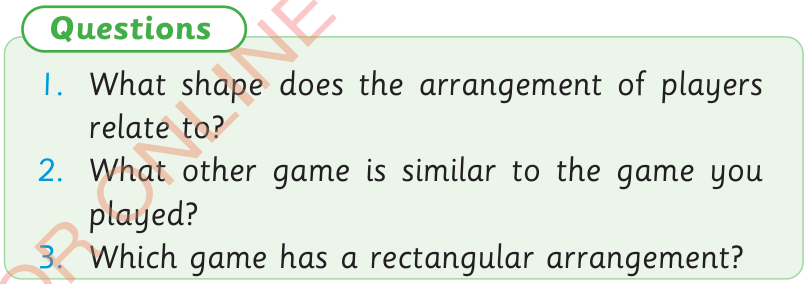
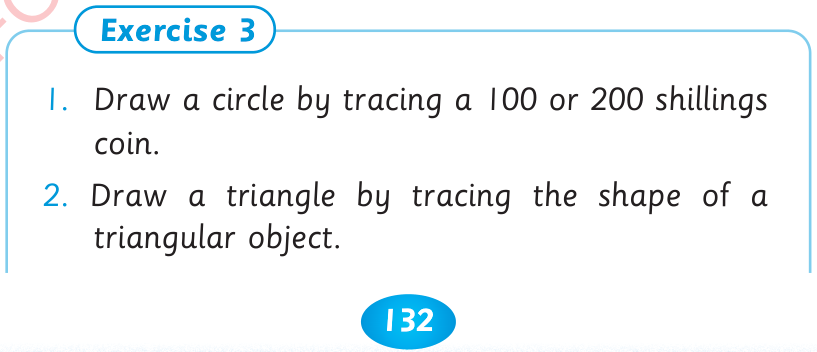

132




Let us sing the song and then answer the questions that follow. Leader: Ukuti-ukuti. Followers: Wa mnazi, wa mnazi. Leader: Mwenzetu, mwenzetu. Followers: Kagongwa, kagongwa. Leader: Na nini, na nini? Followers: Na gari, na gari. Leader: Tumpeleke hospitalini asije kusema kwa baba yake. Followers: Yesa, yesa, yesa, yee. Leader: Cheza kidogo. Followers: Yesa, yesa, yesa, yee.

follow.

Leader:
Ukuti-ukuti.
Followers:
Wa mnazi wa mnazi.
Leader:
Mwenzetu, mwenzetu.
Followers: Kagongwa, kagongwa.
Leader:
Na nini, na nini?
Followers: Na gari, na gari.
Leader:
Tumpeleke hospitalini asije kusema kwa baba yake.
Followers: Yesa, yesa, yesa, yee.
Leader:
Cheza kidogo.
Followers: Yesa, yesa, yesa yee.
Questions. 1. What shape does the arrangement of players relate to? 2. What other game is similar to the game you played? 3. Which game has a rectangular arrangement? Exercise 3. 1. Draw a circle by tracing a 100 or 200 shillings coin. 2. Draw a triangle by tracing the shape of a triangular object.
1. What shape does the arrangement of players relate to?
2. What other game is similar to the game you played?
3. Which game has a rectangular arrangement?
Exercise 3
1. Draw a circle by tracing a 100 or 200 shillings coin.
2. Draw a triangle by tracing the shape of a triangular object.


ARITHMETICS PUPIL'S STD 2.indd 132
06/11/2024 17:24